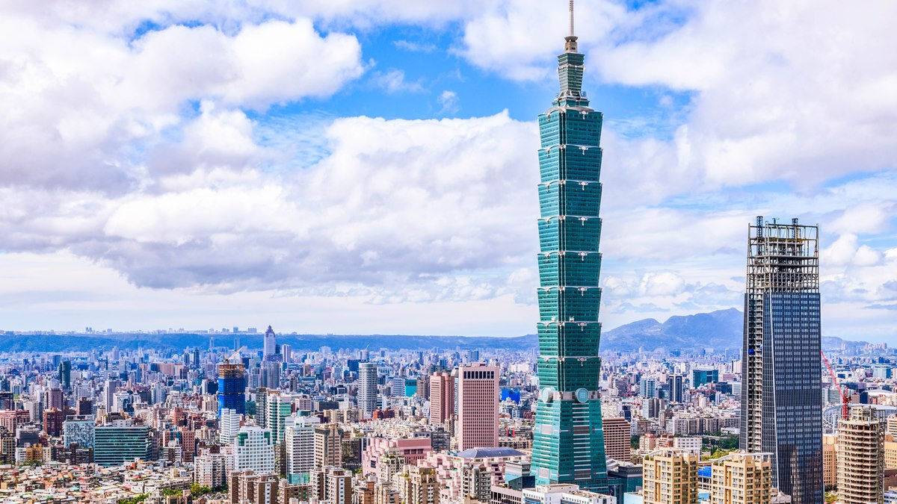
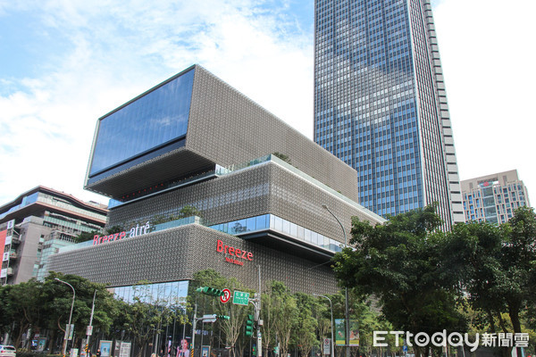

|
 |  | |
| MITSUI OUTLET PARK 林口 | 台北101購物中心 | 微風南山 | 研習心得 |
環保與可持續性：
採用了多項環保技術和材料，如高效節能的空調系統和照明系統，降低能耗。
建築設計注重綠化空間的配置，如屋頂花園和垂直綠化，提升建築的生態效益。
結構特點
抗震結構：
建築結構設計符合台灣嚴格的抗震標準，採用了先進的抗震技術，確保建築在地震中的安全性。
建築基礎深植於地下，採用高強度鋼材和混凝土，確保結構的穩定性和耐久性。
建材選擇：
使用高品質的建築材料，如低輻射玻璃，提升建築的節能效果並減少碳排放。
內部裝修材料選用環保型材質，減少對環境的影響。
施工階段：
工程分為多個階段，包括基礎施工、結構施工、外立面安裝和內部裝修等。
施工過程中使用了先進的施工技術和設備，確保工程進度和質量。
安全與管理：
嚴格遵守建築安全規範，保障施工現場的安全和工人健康。
採用現代化的施工管理系統，確保各項工作的有序進行和高效運營。